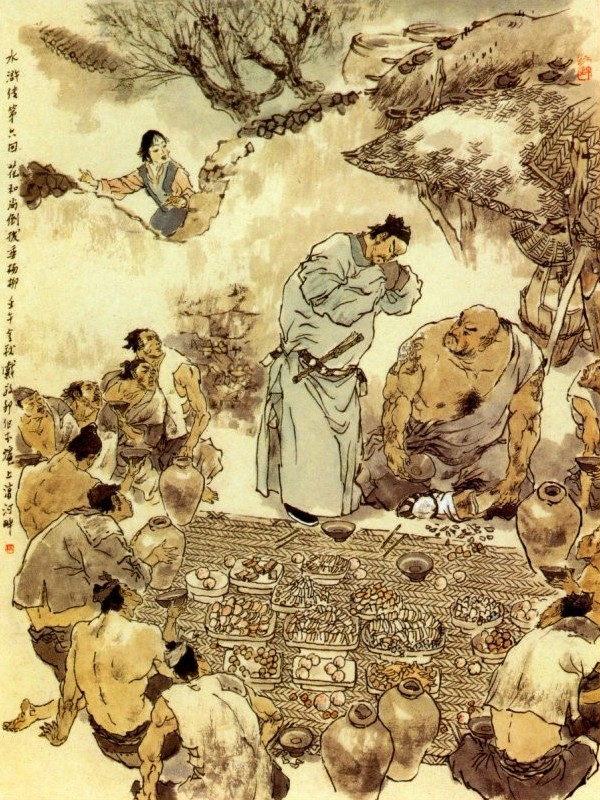
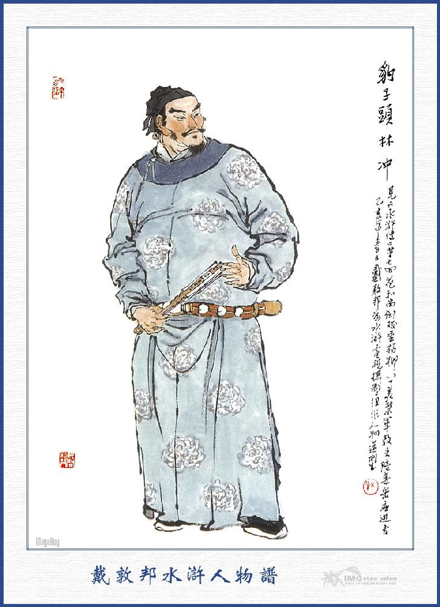
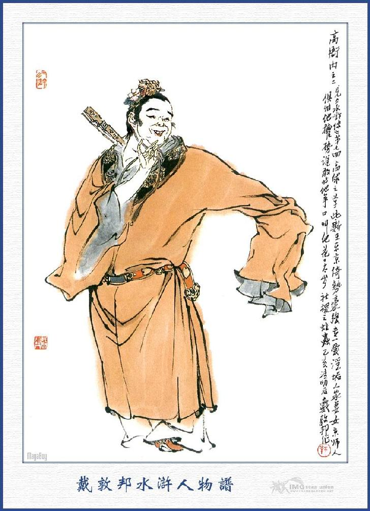
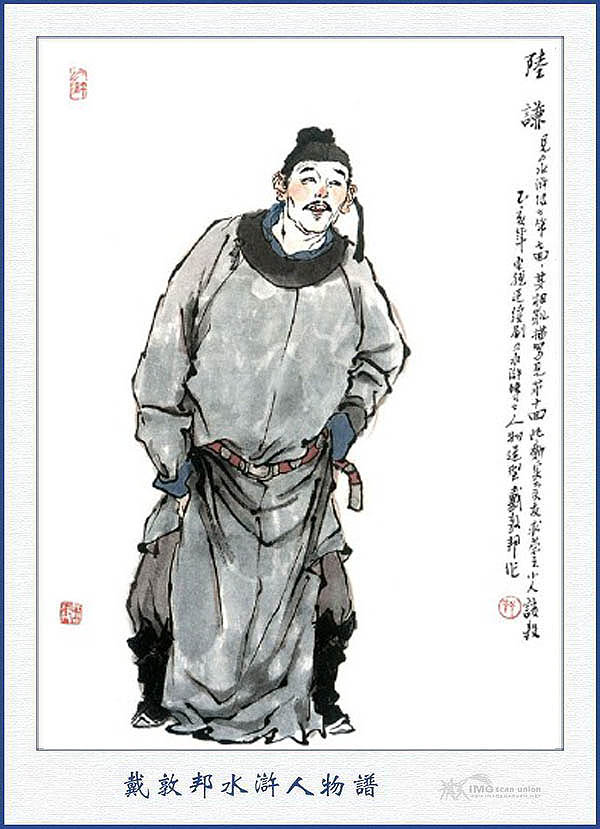
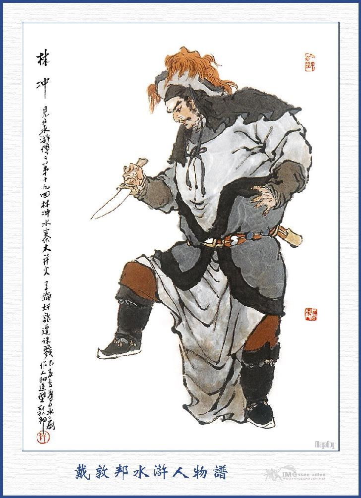
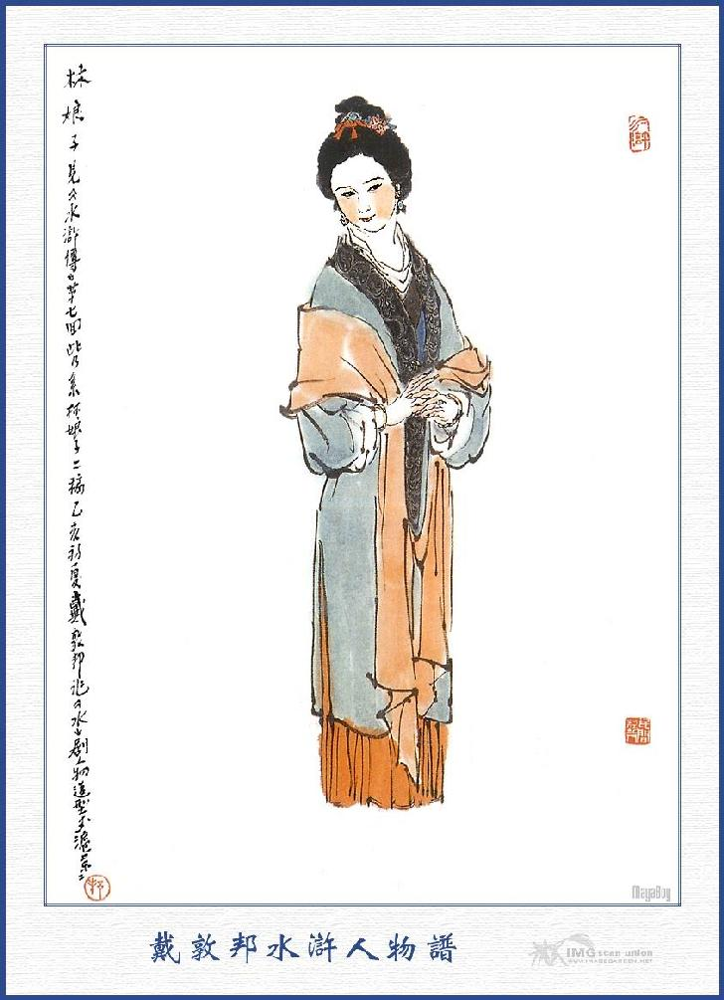

Bấy giờ Trương Tam, Lý Tứ bị Trí Thâm đá lăn vào thùng phân, đầu tóc mặt mũi bẩn thỉu be bét, toan ngóc đầu để lên, nhưng không sao mà lên được. Trí Thâm quát lũ kia mà bảo rằng:
- Chúng bây túm vào lôi hai đứa ấy lên thì ta tha cả cho.
Lũ kia vâng lời, chạy ra lôi hai anh em nọ lên, anh nào anh nấy hôi hám dơ bẩn, không sao mà chịu được. Trí Thâm trông thấy bật cười mà bảo rằng:
- Bây hãy đi tắm rửa sạch sẽ rồi vào đây ta bảo.
Trương Tam, Lý Tứ liền đi ra cái ao gần đấy, tắm rửa xong rồi, anh em đưa quần áo khác, cho mặc vào hầu sư. Bấy giờ Trí Thâm gọi tất cả vào trong Giải Vũ mà bảo rằng:
- Lũ nhãi con, sức chúng bây được bao nhiêu mà dám đến đây xấc láo với ta.
Lũ Trương Tam, Lý Tứ quỳ xuống mà kêu rằng:
- Bẩm sư phụ, chúng con từ đời ông cha ở đây đã lâu, xưa nay chỉ cờ bạc kiếm ăn, cái vườn này tức là cơm áo của chúng con đó. Trước đây chùa Đại Tướng Quốc đã mấy phen sai người đến cấm đoán chúng con không được, ngày nay sư phụ đến đây, thực chúng con chưa được biết uy ngài, xin ngài tha tội cho.
Trí Thâm nói:
- Bây không biết, ta đây là Đề Hạt phủ Kinh Lược Diên An khi trước, chỉ vì giết người nhiều quá, cho nên mới tình nguyện đi tu. Ta chính là nhà sư Lỗ Trí Thâm ở Ngũ Đài Sơn, mới đến đây vậy. Bây phải biết trong đám muôn quân ngàn ngựa, ta đây cũng ra vào đánh giết như chơi, huống chi lũ trẻ nhép chúng bây, độ vài mươi đứa thì đã thấm vào đâu. Từ nay phải liệu hồn mới được.
Lũ kia vâng dạ rồi lạy tạ ra đi, ngày hôm sau tụi Trương Tam, Lý Tứ bàn định với nhau mua được bình rượu, mổ một con lợn đem đến Giải Vũ để mời đãi Trí Thâm.
Bấy giờ Trí Thâm ngồi giữa, tụi kia ngồi làm hai bên hầu rượu, Trí Thâm liền hỏi:
- Các anh bày biện làm chi thế này thêm tốn?
Lũ kia nói:
- Chúng con nay nhờ được có sư phụ ở đây, xin người làm chủ để dạy bảo cho, có chi mà ngại tốn.
Trí Thâm nghe nói cũng hơi hả lòng, cất chén cùng bọn Trương Tam, Lý Tứ cũng uống rượu cho vui. Khi chén đã ngà say rồi, kẻ thì vỗ tay, kẻ thì nói chuyện, kẻ thì nghiêng ngả vui cười rất là huyên náo. Chợt nghe có kêu tiếng oa oa ở ngoài, lũ kia liền lắng tai nghe rồi bảo nhau rằng:
- Điều lành thì ở, điều dữ thì đi.
Trí Thâm nghe nói không hiểu đầu đuôi ra sao liền hỏi:
- Các anh nói câu gì thế?
- Bẩm ngài, ở ngoài kia có tiếng quạ kêu, e khi lại có sự khẩu thiệt gì chăng?
Khi đó có người làm vườn cười mà nói rằng:
- Khẩu thiệt gì? Trên cây dương liễu ở góc tường kia, có một tổ quạ mới làm, nó kêu suốt ngày như thế đấy.
Chúng nghe liền bàn với nhau rằng:
- Nếu thế thì ta vác thang ra phá cái tổ quạ ấy đi cho rảnh.
Nói xong đứng dậy cùng đi ra ngoài vườn, Trí Thâm bấy giờ đã chếnh choáng hơi men, thấy chúng đứng dậy thì cũng cao hứng chạy ra xem chơi. Khi ra tới nơi quả nhiên thấy trên cành dương liễu có một tổ quạ rất to, chúng liền kẻ thì toan lấy thang để trèo, vói lên để bẻ. Trí Thâm không đợi chúng, bèn hăm hăm đi đến gốc cây, cởi phăng áo ra, tay hữu với xuống nắm dưới gốc cây dương liễu, tay tả giơ lên nắm về phía trên rồi xoay lưng vặn đi một cái thật manh, nhổ cây lẫn gốc lên như chơi. Chúng thấy vậy, sụp lạy cả xuống một lượt mà kêu rằng:
- Sư phụ thực là La Hán hiện thân không ai có sức mạnh được như thế!
Trí Thâm cười đáp rằng:
- Thế đã thấm vào đâu, để hôm nào ta diễn võ cho các anh xem.
Nói đoạn lại cùng vào uống rượu đến chiều mới tan.
Từ đấy trở đi chúng càng khâm phục Trí Thâm, cứ hàng ngày lại đem rượu thịt mời Trí Thâm ăn uống rồi lại xem diễn võ đánh quyền. Cách ít lâu Trí Thâm thấy chúng thiết đãi luôn mà không trả lại bữa nào thì không tiện, liền sai người mua dê lợn rượu và các thức hoa quả về để thiết đãi lũ kia, hôm ấy đương vào dạo tháng ba, khí trời bức nóng, Trí Thâm bèn sai trải chiếu dọn rượu ở dưới gốc cây hòe mà mời bọn kia đến quây quần đánh chén. Khi ăn uống đã no say, chúng nói với Trí Thâm rằng:
- Từ khi sư phụ đến đây, anh em vẫn phục ngài là bậc vô địch ở đời, nhưng hiềm vì chưa được xem ngài diễn lại bài roi gậy bao giờ? Vậy tiện đây xin sư phụ rộng phép cho xem thì thực là may mắn.
Trí Thâm gật đầu ưng thuận, liền vào phòng lấy cây thiền trượng dài 5 thước, nặng 62 cân ra, đưa cho chúng xem. Chúng xem đến đều kinh ngạc mà nói:
- Nếu hai cánh tay mà không khỏe bằng sức con trâu lớn thì vác làm sao nổi cái trượng này?
Trí Thâm cầm lấy cây trượng ra chỗ rộng, múa lên đánh xuống, một lúc lâu trông vun vút như gió bay mây cuốn, anh nào anh ấy vỗ tay khen ngợi luôn mồm. Đương khi ngọn gậy xuống lên, rất khoái hoạt thì bỗng thấy có người reo bên đường nói lên rằng:
- Gậy múa giỏi thực.
Trí Thâm nghe nói, bèn dừng tay gậy lên rồi nom ra thấy một người, đầu đội khăn xéo xanh, đằng sau gáy cài vòng bạch ngọc, mình mặc áo chiến bào đơn, mầu lục, lưng thắt đai bạc chạm một dải lưng rùa, chân đi đôi hài mõm vuốt, tay cầm cái quạt Tứ Xuyên, đầu báo mặt tròn, râu hùm, hàm én thân cao tám thước, tuổi ngoại ba mươi, đương đứng góc tường khuyết dòm sang. Người ấy thấy Trí Thâm ngẩng cổ lên thì cười mà nói rằng:
- Sư phụ đánh gậy xuất sắc lắm, không ai bằng được.
Lũ kia nghe thấy người ấy nói thì bảo nhau rằng:
- Giáo Đầu đã khen thì tất không phải tầm thường.
Trí Thâm quay lại hỏi chúng rằng:
- Người ấy là ai?
- Người ấy là ông Giáo Đầu Lâm Xung, dạy 80 vạn cấm binh ở Đông Kinh đó.
Trí Thâm nghe nói là Giáo Đầu liền bảo chúng rằng:
- Sao các ngươi không mời ông ấy sang đây?
Vừa nói dứt lời thì Lâm Giáo Đầu đã vượt tường sang đến chỗ Lỗ Trí Thâm đứng, chắp tay chào mà nói:
- Kính chào sư phụ, chẳng hay sư phụ ở đâu mới tới đây, pháp hiệu ngài là gì mà chúng tôi không được biết?
Trí Thâm cũng vái chào mà đáp rằng:
- Tôi là Trấn Quang Tây Lỗ Đạt mới đến tu hành ở đây, khi tôi còn nhỏ qua tới Đông Kinh cũng có được biết quan Lâm Đề Hạt sinh ra ngài ngày trước. Lâm Xung nghe nói cả mừng liền bái kết anh em mà tôn Lỗ Trí Thâm làm đàn anh. Trí Thâm lại hỏi Lâm Xung rằng:
- Hôm nay Giáo Đầu đi đâu mà lại tới đây?
- Thưa ngài, hôm nay nhân tôi cùng đàn bà nhà tôi đi ra lễ ở nhạc miếu gần đây, sau nhác trông thấy sư huynh múa gậy lấy làm thích mắt bèn để cho đàn bà nhà tôi đi vào miếu với con đỏ mà lẻn ra đây để bất đồ được gặp sư huynh thực là may quá.
- Tôi mới đến đây chưa quen biết với ai, chỉ có các anh này ngày làm bạn cho vui, nay lại được Giáo Đầu có lòng chiếu cố mà kết làm anh em thì còn gì hơn nữa?


LÂM XUNG
Nói xong lại rót rượu mời Lâm Xung Giáo Đầu cùng uống. Vừa khi uống được ba chén thì đã thấy đứa con hầu đỏ bừng mặt mũi đứng ở góc tường khuyết bên kia mà kêu lên rằng:
- Xin ngài đứng dậy mau, bà đương cãi nhau ở trong miếu kia.
Lâm Xung nghe nói, vội hỏi rằng:
- Cãi nhau ở chỗ nào?
- Bẩm ở trên lầu Ngũ Nhạc Miếu đi xuống thì gặp người nào giữ lại rồi cãi nhau ở đấy luôn.
Lâm Xung mãi mốt đứng dậy vái Trí Thâm mà rằng:
- Xin sư huynh tha lỗi cho, tôi phải sang bên kia một lúc.
Nói xong nhảy tót ra bên kia tường, cùng với con hầu, đi thẳng sang lầu Ngũ Nhạc. Khi tới nơi thấy mấy người đứng dưới ở vòng bao lơn, một người thiếu niên thì đang đứng giữa thang ngăn vợ Lâm Xung lại mà bảo rằng:
- Nàng hãy lên trên lầu, để tôi nói chuyện đã.
Bấy giờ mặt mũi vợ Lâm Xung đỏ tím lại hẳn mà kêu lên rằng:
- Đương lúc thanh bình thế giới mà dám đùa bỡn với vợ con nhà tử tế là thế nào?
Lâm Xung thấy vậy, dùng dằng tức giận chạy lên thang lầu nắm lấy vai anh chàng thiếu niên mà giật một cái rồi bảo rằng:
- Anh dám đùa bỡn vợ con nhà tử tế thì có đáng tội hay không?
Chàng nói xong vừa mới giơ tay toan đánh, bất đồ trông đến mặt thì té ra chính là cậu ấm Cao, con nuôi Cao Thái Úy nhà mình, liền chùn tay lại mà không đánh nữa. Nguyên Cao Cầu mới phát tích được làm Thái Úy mà con cái chưa có, bèn nuôi con người em là Cao Tam làm con, để sớm ngày bè bạn cho vui. Nhân thế Cao Cầu rất là yêu quý, cho nên cậu ấm cứ ỷ quyền cậy thế mà phóng túng, chơi bời gặp vợ con ai cũng là đùa bỡn, người ta đã thường gọi là Hoa Hoa Thái Tuế xưa nay. Khi đó cậu ấm Cao, thấy Lâm Xung dừng tay không đánh, nhưng cũng chưa biết người đàn bà ấy là vợ Lâm Xung, liền quay cổ lại mà hỏi rằng:
- Lâm Xung có việc gì đến ngươi mà ngươi lôi thôi vào đây?
Những người ở gần đấy thấy vậy thì xúm nhau đến khuyên giải Lâm Xung rằng:
- Thôi Giáo Đầu đừng nói nữa, cậu ấm không biết cho nên mới lỡ ra như thế.
Cậu ấm nghe tới đó mới biết là vợ Lâm Xung và lại bị người ta khuyên giải cản ngăn, mới bất đắc dĩ, phải ra miếu lên ngựa mà về.
Lâm Xung tuy vậy trong lòng vẫn còn tức giận, trừng mắt nhìn theo cậu ấm một lúc rồi mới đưa vợ ra về. Vừa đi tới cửa thì đã thấy Lỗ Trí Thâm tay cầm thiền trượng, cùng với hai ba mươi tên đãng tử kia đi sồng sộc vào miếu. Lâm Xung liền hỏi:
- Sư huynh đi đâu đấy?
Trí Thâm đứng dừng lại mà đáp rằng:
- Tôi định đi đến đấy, xem đứa nào láo thì giúp anh mà đánh cho nó một mẻ đấy.
- Có phải ai đâu, đấy là cậu ấm con quan Thái Úy, vì không biết là vợ con tôi, cho nên mới vô lễ như thế, tôi đã toan đánh cho một trận, nhưng lại sợ đối với Cao Thái Úy, có điều không tiện, cho nên phải thôi.
- Bác sợ Thái Úy nhà bác, chứ tôi sợ gì, giá tôi mà gặp nó thì hãy đãi cho nó vài trăm cái thiền trượng này cho biết tay đã.
Lâm Xung thấy Trí Thâm hơi có dáng say, liền cười mà đáp rằng:
- Sư huynh nói cũng phải, nhưng tôi bây giờ bị người ta can ngăn cho nên hãy tạm tha cho nó đấy.
- Nếu sau có việc gì, xin cứ đến bảo tôi, tôi sẽ đi với.
Bây giờ lũ kia thấy Trí Thâm ra bộ say sưa thì cũng gạt rằng:
- Thôi xin sư huynh hãy về, để lần sau sẽ liệu cho nó.
Trí Thâm nghe nói, liền giơ gậy lên bảo vợ Lâm Xung rằng:
- Bà chị đừng cười tôi nhé!
Nói xong bái biệt Lâm Xung rồi cùng bọn kia, trở về Giải Vũ.

CAO NHA NỘI
Nói về Cao Nha Nội (tức cậu ấm Cao) từ khi dẫn lũ nhân đãng đi chơi, trông thấy vợ Lâm Xung nhan sắc đẹp đẽ, lại bị Lâm Xung ngăn trở tự do thì trong bụng sinh ra mê mẫn bồn chồn mà khi về phủ cứ băn khoăn khó chịu. Cách mấy hôm sau lũ nhàn hán đến hầu Nha Nội, thấy nét mặt có vẻ buồn bã thì anh nào cũng ngờ vực, không hiểu vì lẽ làm sao rồi lại tan cả hội họp. Duy có một tay thân mật là Cao Ô Đầu Phú An, có biết được tâm sự của Nha Nội, liền nhân khi vắng vẻ một mình, lẻn vào trong phủ mà bảo Nha Nội rằng:
- Mấy hôm nay trông nhan sắc có phần hơi kém tất là ở trong bụng có điều gì không vui, xin Nha Nội cho tôi được biết?
Nha Nội liền hỏi:
- Tại sao mà ngươi biết?
- Bẩm tôi đoán chắc như thế hẳn.
- Vậy ngươi thử đoán xem, tại việc gì mà ta không vui?
- Bẩm có lẽ Nha Nội lại chỉ tơ tưởng về chữ "Song Mộc"mà thôi.
Nha Nội nghe nói mỉm cười mà rằng:
- Sao ngươi đoán đúng thế? Nhưng ta không biết làm cách gì được đây?
- Nha Nội tưởng có gì là khó, Lâm Xung tuy là một tay hảo hán, nhưng còn thuộc quyền Thái Úy đây, bảo sao phải nghe vậy, nếu phật ý Thái Úy, nhẹ ra thì cũng bị đày ải đi nơi xa mà nặng ra thì mất mạng, chớ chẳng chơi đâu. Bởi thế tôi có kế này làm cho Nha Nội, khả dĩ gặp người ấy được.
- Ta từ xưa gặp con gái cũng nhiều, nhưng chưa thấy có ai mà ta lại mê như người ấy, vì thế cho nên vẫn buồn bã không yên, nay nếu ngươi có kế gì làm cho ta gặp mặt thì sau này ta sẽ trọng thưởng cho ngươi.
- Bẩm ngài, Lục Ngu Hầu Lục Khiêm là người tâm phúc ở trong phủ mà nhà ở liền đây, xưa nay chơi với Lâm Xung thân lắm, vậy Nha Nội chỉ nên dặn Lục Ngu Hầu mời Lâm Xung đánh chén một nơi rất kín, ở Phàn Lâu rồi nhất diện sai người bày tiệc ở gác nhà Ngu Hầu, để Nha Nội vào nấp ở trong đó, chờ cho hai bác kia đi được hồi lâu, sẽ sai người đến nhà nói với vợ Lâm Xung là chồng uống rượu ở nhà Ngu Hầu bị cảm nặng, chết ngất ra đó thì tất nhiên phải đến cứu đỡ, khi tới nơi lên gác rồi, Nha Nội sẽ ở đấy mà dỗ dành ngon ngọt là hắn phải nghe. Vả chăng đàn bà vốn Thủy Tính xưa nay mà lại trông thấy Nha Nội trẻ trung sang trọng, như thế có lẽ nào cầm lòng cho đặng, vậy kế ấy Nha Nội nghĩ sao?
Cao Nha Nội nghĩ một lúc, vỗ tay cười mà nói rằng:
- Diệu kế! Diệu kế! Nếu vậy chiều nay ta phải tìm Ngu Hầu vào dặn bảo rồi mai thi hành mới được.
Nói đoạn sai người sang gọi Lục Ngu Hầu sang, bảo rõ đầu đuôi cho biết. Ngu Hầu tuy chơi với Lâm Xung cũng có phần thân mật, song đến điều sở thích của Nha Nội thì cũng phải bỏ tình bè bạn chiều chuộng cho xong, liền vâng lời về sắp sửa, để sáng hôm sau thi kế.
Lâm Xung từ khi gặp Cao Nha Nội vô lễ tới nay thì trong lòng tức giận, không muốn đi tới đâu. Chợt hôm ấy đương ngồi ở nhà thì thấy ngoài cửa có người đến bảo rằng:
- Lâm Giáo Đầu có ở nhà không?
Lâm Xung nghe nói mãi miết chạy ra xem thì là người anh em bạn thân là Lục Ngu Hầu, liền vái chào mà hỏi:
- Ngu Hầu đi đâu đến đây thế?

LỤC KHIÊM
Ngu Hầu cười mà đáp rằng:
- Mấy hôm nay mong mỏi, sao mà không thấy quan bác đi chơi đâu?
- Mấy hôm nay trong bụng không được vui, nên không muốn đi đâu cả.
- Bây giờ mời quan bác sang tôi chơi, uống mấy chén rượu cho đỡ buồn đi.
- Quan bác hãy vào đây uống tạm chén nước rồi sẽ đi.
Khi uống xong rồi, hai người đứng dậy ra đi, Lục Ngu Hầu lại quay lại nói với vợ Lâm Xung rằng:
- Thưa bác tôi đoán bác trai sang nhà tôi uống mấy chén rượu rồi đi về ngay.
Nói xong, hai người cùng ra đi vòng quanh trong phố một lát rồi Ngu Hầu bảo Lâm Xung rằng:
- Bây giờ ta đừng về nhà nữa, cứ đến Phàn lâu đánh chén, có lẽ thú hơn.
Lâm Xung vâng lời, cùng nhau đến gác Phàn Lâu, tìm nơi tĩnh mịch để ngồi, gọi tửu bảo lấy rượu và thức nhắm lên để cùng uống. Trong khi uống rượu, thỉnh thoảng Lâm Xung lại thở dài một tiếng, Ngu Hầu nghe thấy liền hỏi:
- Chẳng hay về việc gì mà bác thở dài như thế?
- Tôi nghĩ làm thằng con trai ở đời, tài sức chẳng kém gì ai, thế mà không gặp được người minh chủ, đành phải khuất dưới kẻ tiểu nhân rồi lại bị người ta trêu tức thì có khó chịu hay không?
- Hiện nay ở Đông Kinh, đã có mấy người Giáo Đầu tài sức như bác, vả quan Thái Úy cũng có lòng coi như người ta, vậy còn ai trêu tức bác được nữa?
Lâm Xung liền đem chuyện Cao Nha Nội ở Nhạc Miếu hôm trước, nói cho Ngu Hầu nghe, Ngu Hầu nghe nói, liền gạt đi rằng:
- Tưởng chuyện chi, cứ như việc ấy chắc là Cao Nha Nội không biết, cho nên mới lỡ ra thế thôi, có việc gì mà bác lo nghĩ cho phiền! Ta cứ phó mặc tự nhiên mà uống rượu có hơn không?
Lâm Xung uống xong mười chén rượu rồi đứng dậy bảo Ngu Hầu rằng:
- Bác hãy xơi rượu, để tôi vào rửa mặt rồi lại xin ra tiếp ngay.
Nói xong toan chạy đi phía ngõ bên đông.
Vừa khi Lâm Xung bước tới đầu ngõ thì thấy đứa trẻ ở nhà, chạy hớt hãi bảo rằng:
- Quan Nhân ơi! Sao ngài lại ở đây làm cho tôi tìm mãi?
Lâm Xung lấy làm ngạc nhiên, hỏi vội lên rằng:
- Việc gì?
- Vừa rồi ngài đi với Ngu Hầu được một lúc thì có một anh chạy lật đật đến bảo với bà tôi rằng: "Ngài uống rượu ở nhà Ngu Hầu, không biết vì cớ gì mà bỗng dưng ngã vật xuống, bà phải sang ngay xe sao mới được". Bà nghe vậy, vội vàng gửi nhà Vương Bà coi giúp rồi cùng tôi được đến thẳng nhà Ngu Hầu, khi lên đến gác, chỉ thấy bàn rượu bày ra chững chạc ở đó mà ngài thì chẳng thấy đâu, bà tôi liền vội vàng quay xuống thì ai ngờ bị người thiếu niên ở Nhạc Miếu hôm nọ, ngờ đâu đâm bổ ra mà bảo rằng: "Bà hãy ngồi đây, ông ấy đến bây giờ đấy.” Đoạn rồi tôi bước xuống khỏi thang thì nghe tiếng bà tôi kêu "giết người", ầm ĩ cả lên. Bởi vậy tôi vội vàng đi tìm mãi mà chẳng thấy ngài đâu, sau gặp Trương Tiên Sinh bảo rằng: Ngài đương ngồi uống rượu với ai ở Phàn Lâu, tôi liền chạy mãi đến đây tìm ngài, xin ngài đi đến mau xem sao mới được.
Lâm Xung nghe nói, rụng rời kinh ngạc, không đợi con trẻ cùng đi mà chạy ba chân bốn cẳng, đến ngay nhà Ngu Hầu trèo lên trên gác để xem. Khi tới nơi thì cửa gác đã đóng chặt mà vẫn có tiếng đàn bà kêu gọi ở trong rằng:
- Đời thuở nhà ai mà dám đem vợ con nhà tử tế nhốt vào đây không?
Đoạn rồi lại nghe thấy tiếng Cao Nha Nội nói khẽ rằng:
- Xin nương tử thương tôi với, nương tử có phải là gỗ đá đâu mà tôi nói thế nào cũng không chuyển được?
Lâm Giáo Đầu nghe rõ từng lý, liền nổi giận xung thiên quát lên rằng:
- Mở cửa cho ta.
Trong kia người đàn bà nghe tiếng biết là chồng mình đã đến liền cố bứt chạy ra mở cửa, còn cậu ấm Cao biết thế nguy hiểm đến nơi thì mở cửa sổ nhảy qua tường trốn thoát.

LÂM XUNG

LÂM PHU NHÂN
Lâm Xung lên đến gác, tìm Cao Nha Nội thì đã mất rồi, sau hỏi đến vợ cặn kẽ, mới biết là trúng kế gian nhân mà cũng may chưa hề phạm tới, song trong lòng thì căm tức Ngu Hầu vô hạn, liền đập phá nhà Ngu Hầu tan nát cả rồi đưa vợ cùng con trẻ ra về.
Khi đưa về đến nhà rồi, Lâm Xung lại vác đao, đi thốc đến Phàn Lâu, tìm Ngu Hầu, nhưng Ngu Hầu đã trốn đi đâu mất, chàng lại đến tận cổng để đón đánh mà suốt ngày hôm ấy cũng không thấy đâu cả. Lúc về nhà Lâm Xung vẫn còn căm tức, nhưng vợ gạt đi mà can rằng:
- Tôi tuy mắc lừa, song cũng chưa đứa nào dám phạm đến thì còn sinh sự làm chi?
Lâm Xung cứ khẳng khái mà rằng:
- Quân súc sinh mồm thì xoen xoét nào anh nào tôi, ai ngờ nó lại đánh lừa như thế? Tất nhiên ta phải trị ngay nó mới được!
Vợ Lâm Xung thấy chồng mình hăng hái thì cố sức can ngăn mà giữ riết ở trong nhà, không cho đi đâu, còn Ngu Hầu thì cũng trốn ở trong phủ Thái Úy mà không dám về đến nhà nữa.
Cách ba bốn hôm sau, Lỗ Trí Thâm đến chơi nhà Lâm Xung mà hỏi rằng:
- Chẳng hay mấy hôm nay vì cớ gì mà không thấy quan anh đến chơi vậy?
Lâm Xung nói:
- Tiểu đệ vì bận chút việc riêng, cho nên không đến chơi với sư huynh được, nay sư huynh quá bộ đến đây, giá mời ngài ở chơi xơi chén rượu thì phải, nhưng ngặt vì trong nhà không được sẵn sàng, vậy xin đón sư huynh ra chơi ngoài phố rồi ta tìm cái hàng nào uống mấy chén rượu cho vui, sư huynh nghĩ sao?
Lỗ Trí Thâm cười mà đáp lại rằng:
- Cũng được.
Nói đoạn hai người cùng đi ra phố, tìm vào hàng rượu với nhau rồi lại hẹn hò đến mấy hôm sau tương hội. Từ đó ngày nào Lâm Xung cũng đi chén với Trí Thâm, dần dần khuây khoả nỗi lòng mà không nghĩ đến gì nữa.
Nói về Cao Nha Nội khi còn ở nhà Ngu Hầu, bị một phen kinh sợ, phải nhảy qua tường mới thoát được nạn, về tới nhà không dám nói với Cao Thái Úy rồi cứ tấm tức trong lòng mà ngơ ngẩn thành bệnh. Lục Khiêm và Phú An thấy vậy liền hỏi Cao Nha Nội rằng:
- Chẳng hay Nha Nội vì sao mà tinh thần bỗng kém đi làm vậy?
- Không dấu gì các ngươi, chỉ vì hai lần không được gặp giai nhân, lại bị một phen kinh sợ, cho nên đau đớn trong lòng mà sinh bệnh đó thôi.
- Việc ấy xin Nha Nội cứ an tâm, thế nào chúng tôi cũng có thể làm cho kỳ được, chỉ trừ ra có tự tử mất thì thôi.
Đương khi nói chuyện thì có tên Đô Quản già, cùng vào thăm Nha Nội ở đó. Đô Quản hỏi thăm bệnh thế qua loa rồi, vừa quay ra thì thấy Lục Khiêm, Phú An dắt đến chỗ vắng vẻ mà bảo nhau rằng:
- Bây giờ ta muốn cho Nha Nội được khỏi bệnh thì tất nhiên phải làm sao tán hót với Thái Úy kết liễu anh Lâm Xung đi rồi đem vợ hắn về cho Nha Nội, thế là diệu hơn. Bằng không thì tính mạng Nha Nội tất là không toàn được nữa.
Lão Đô Quản nghe nói liền đáp lại rằng:
- Việc gì, chứ việc ấy thì dễ lắm, để chiều hôm nay lão sẽ bẩm với Thái Úy là được.
- Chúng tôi đã định kế sẵn rồi, nếu bác kêu với Thái Úy được thì tôi sẽ nói.
Lão Đô Quản nhận lời mà lui ra.
Chiều hôm ấy lão Đô Quản lên so vai rụt cổ tâu với Thái Úy rằng:
- Bẩm ngài, bệnh của Nha Nội, có vì cớ gì đâu, chỉ vì người vợ Lâm Xung đó thôi.
Cao Cầu đã biết nết đứa con nuôi liền hỏi:
- Nó gặp vợ Lâm Xung từ bao giờ?
- Bẩm Nha Nội được gặp ở Nhạc Miếu hôm 28 tháng trước, đến nay đã được hơn một tháng rồi.
Nói đoạn liền đem chuyện Nha Nội lập kế đến nhà Ngu Khiêm rồi bị một trận kinh hoàng, kể hết cho Thái Úy nghe. Thái Úy nghe xong nhăn nhó mặt, ra vẻ nghĩ ngợi mà bảo rằng:
- Như thế thì làm thế nào được, nếu tiếc một thằng Lâm Xung thì tính mệnh con ta tất là nguy mất? Nghĩ sao cho tiện đây?
- Bẩm, Lục Khiêm và An Phú đã có kế thi hành, vậy ngài thử đòi hỏi xem sao?
Thái Úy gật đầu bảo Đô Quản đi gọi Phú An và Lục Khiêm đến.
Khi hai tên ấy đến, Cao Thái Úy liền trỏ bảo rằng:
- Nha Nội đương bị bệnh như thế, các ngươi có kế gì khiến Nha Nội khỏi được bệnh ngay thì ta sẽ cất nhắc lên cho.
Lục Khiêm so vai rụt cổ bẩm rằng:
- Việc ấy trừ phi như thế, như thế, thì không có thể được.
- Đã như thế thì ngày mai các ngươi phải làm ngay đi mới được.
Lũ kia vâng dạ mà xin ra để thi hành.
Lâm Xung từ khi có Lỗ Trí Thâm, cứ ngày ngày chè rượu làm vui thì trong lòng khuây khoả phó mặc chuyện ngoài không nghĩ, chợt một hôm hai người đương đi ở trên phố Duyệt Võ thì thấy một người to lớn, đầu đội khăn mỏ rìu, mình mặc áo chiến bào cũ, tay cầm cây đao có bao lưỡi cẩn thận, đương đứng ở trên phố mà nói lảm nhảm một mình rằng:
- Uổng phí cả thanh bảo đao của mình, không có một ai biết cả!
Lâm Xung nghe thấy vậy, cứ điềm nhiên, chỉ cúi đầu cúi cổ, cùng với Trí Thâm vừa chuyện vừa đi mà không nhìn thèm đến. Người kia cứ đi theo đằng sau mà nói luôn miệng nói rằng:
- Thanh bảo đao tốt như thế này mà không biết đến, đáng tiếc chưa?
Lâm Xung lại mặc kệ đi ngoắt vào trong ngõ; người kia cũng lại theo sau mà cứ nói một mình rằng:
- Quái lạ! Cả một chỗ kinh đô rộng lớn như thế này mà không có ai biết đến đồ dùng binh hay sao?
Lâm Xung nghe nói đến câu ấy thì phải quay đầu nom lại xem. Anh kia biết ý liền tuốt thanh đao sáng nhoáng ra cầm ở tay. Lâm Xung trông thấy choáng mắt, liền bảo người ấy rằng:
- Đem lại đây tôi xem.
Người kia cầm đao đưa đến, Lâm Xung cầm lấy, cùng với Trí Thâm xem ngắm hồi lâu, bất giác buột miệng khen rằng:
- Thanh đao tốt thực anh định bán bao nhiêu?
Người kia nói:
- Đao này đáng giá 3000 quan, nhưng thực ra 2000 quan tôi mới bán.
- Phải, đáng giá 2000 quan, nhưng mấy ai đã biết được? Nếu anh có chịu bán 1000 quan thì tôi mua cho?
- Tôi bây giờ đương cần tiền tiêu, vậy nếu ông định mua thì xin ông bớt đi 500 quan, còn ông phải trả 1500 quan mới được.
- Chỉ có 1000 quan, có bán thì tôi cố mua vậy.
Người kia thở dài đáp rằng:
- Thôi cần tiền đành bán rẻ vậy, nhưng phải trả đủ tiền mới được.
- Đi, anh theo tôi về nhà lấy tiền.
Lâm Xung nói xong, quay lại bảo Lỗ Trí Thâm rằng:
- Quan bác hãy đến Xái Phòng đợi tôi rồi chốc tôi xin đến.
Trí Thâm nói:
- Thôi để tôi về, sáng mai ta lại gặp.
Đoạn hai người chào nhau, Lâm Xung đưa người bán đao về nhà lấy tiền.
Khi trả tiền xong, Lâm Xung lại hỏi người bán đao rằng:
- Thanh đao này anh làm gì mà có?
- Nguyên của ông cha tôi để lại cho, nhưng đến nay túng kiết, mới phải bán đi.
- Ông cha anh người trước thế nào?
- Thưa ngài, tôi nói ra bây giờ lại thêm tủi thân lắm thôi. Lâm Xung nghe nói vậy thì để mặc hắn đi mà không hỏi nữa. Bấy giờ lại cầm thanh đao ngắm nghía luôn tay mà khen ngợi một mình rằng:
- Cái đao này tốt thực, trong phủ Thái Úy cũng có một thanh đao báu, xưa nay vẫn làm bộ không cho ai xem đến, để rồi ta thử đem đọ xem sao? Chàng khen lấy khen để rồi xem đi xem lại mãi đến đêm mới treo lên vách mà đi nghỉ. Sáng hôm sau lại đến trông ngắm thanh đao mà khen mãi không thôi.
Trưa hôm ấy chợt thấy hai tên lính, chạy đến bảo với Lâm Xung rằng:
- Quan Thái Úy nghe nói Giáo Đầu mới mua được thanh đao tốt, ngài truyền chúng tôi ra bảo ông đem vào để đọ xem. Thái Úy hiện đang đợi ở trong phủ đó.
Lâm Xung nghe nói thì lẩm nhẩm trong bụng rằng:
- Thằng ranh nào lại bợm thế! Nó đã mỏng môi tâu nộp được ngay rồi.
Nghĩ đoạn mặc áo đội khăn vác thanh đao đi theo hai tên lính. Khi đi đường Lâm Xung hỏi hai tên lính rằng:
- Các ngươi có ở trong phủ mà sao ta chưa biết mặt bao giờ?
Hai tên lính nói:
- Chúng tôi hầu ở nhà trong, cho nên ông ít khi gặp.
Vừa nói dứt câu chuyện thì đã đi tới nhà công đường phủ Thái Úy, Lâm Xung liền đứng dừng lại đấy. Hai tên lính nói:
- Quan Thái Úy ngồi đợi ở nhà trong, mời ông đi vào.
Lâm Xung đi thẳng vào nhà trong, không thấy quan Thái Úy, lại đứng dừng lại. Hai tên lính lại giục:
- Ở nhà trong nữa, mời ông cứ đi vào đi.
Lâm Xung lại theo hai tên lính được quanh co mấy lần cửa, đến một chỗ xung quanh toàn thị lan can tím. Hai tên lính đưa Lâm Xung đến ở thềm mà rằng:
- Ông đứng đợi ở đây, để tôi vào bẩm Thái Úy ra đây.
Hai tên lính nói xong liền quay trở vào, Lâm Xung đứng đợi mấy phút đồng hồ, không thấy ai đến, trong bụng hơi nghi, liền ngó cổ vào trong rèm nom thấy cái biển viết ba chữ: "Bạch Hổ Đường"xanh xanh thì giật nẩy mình nghĩ ra rằng:
- Đây là chỗ thương nghị quân cơ đại sự mà sao nó tự nhiên vô cố, nó lại dắt ta vào đây? Chết nỗi! Có phép đâu được thế!
Chàng nghĩ như vậy, vừa toan quay bước trở ra thì đã thấy tiếng giày lẹt xẹt ở ngoài đi vào, liền ngẩng cổ lên nom thì chính là Cao Thái Úy đến đó. Lâm Xung thấy Cao Thái Úy vào thì mãi mốt cắp thanh đao rồi chắp tay vái chào Thái Úy. Thái Úy làm bộ ngạc nhiên quát lên mà hỏi dồn luôn rằng:
- Có ai sai bảo gì mà vào Bạch Hồ Đường như thế? Ngươi có biết pháp luật gì không mà cầm đao vào đây? Hay là định mưu hại ta chăng? Có người nói với ta rằng: Mấy hôm nay ngươi vẫn vác đao, đến chực chõm ở trước phủ. Chắc là có bụng phản trắc chi đây?
Lâm Xung cúi mình bẩm rằng:
- Bẩm ân tướng, vừa rồi có hai tên lính, truyền gọi Lâm Xung đem đao vào để ân tướng đọ xem, cho nên hạ nhân mới dám tới đây.
- Lính nào? Đâu?
- Bẩm hai tên đi vào nhà trong rồi?
- Nói lạ! Lính nào dám vào phủ đường ta? Tả hữu đâu trói tên này lại cho ta.
Nói chưa dứt lời thì thấy mấy mươi tên lính ở đâu đổ ra bắt Lâm Xung mà trói lại.
Cho hay:
Mấy người trí dũng xưa nay,
Trời làm chi đến nỗi này thì thôi;
Lạ cho là giống ở đời;
Đỉnh chung sao để những nòi bất nhân?
Bắc thang lên hỏi hồng quân.
Xưa nay tay Tạo cầm cân thế nào?
Xây chi những cuộc ba đào?
Nước non luống để anh hào biết gan?
Lời bàn của Thánh Thán
Hồi này dụng bút viết ra rất khó, vì sau trước khác nhau, nếu trước sau tả xuôi một việc thì có dư bút mà lây sang một việc kia cũng nhân việc này mà nảy ra việc khác. Nay hồi này tả Lâm Xung mới nhận được Lỗ Đạt, thân nhiệt khác ra, liên tiếp một việc Nha Nội, đấu khí khác ra, nay chỉ tả Lỗ Đạt thì tạm gác một bên câu chuyện Nha Nội mà tả Nha Nội thì tạm gác một bên câu chuyện Lỗ Đạt, thực là thấy trong sự diễn tả cũng đôi đường tiến thoái lưỡng nan. Huống chi trong sự tả Nha Nội, lại cốt chia hai lần, một lần chép ở nhà họ Lâm (mua đao), một lần ở phủ họ Cao, tả Cao Phủ thì nhằm vào họ Lâm mà tả họ Lâm nhằm vào Cao Phủ, trong lúc tả lắm chuyện như thế, lại thêm một anh chàng vườn rau, luôn luôn lui tới, nếu anh chàng vườn rau như mọi người thì khác hẳn, đàng này lại là một tay hảo hán, lúc nào cũng sẵn sàng can thiệp những chuyện bất bằng, ngay gữa đường đi, đã từng đánh ba quyền chết Trấn Quan Tây ở nơi Châu Vị, nếu tả Lỗ Đạt biết đến chuyện ở nhà Ngu Hầu thì tác giả tả làm sao cho hết câu chuyện mưu toan thâm ác của đám quân phiệt, như Cao Cầu vốn bất chính lại nuông con làm trắng trợn hơn? Đọc tới đây không phục tài tác giả thì chưa xem nổi văn chương diễn tả của người xưa, khéo léo dùng bút.
Hồi này nhiều bút pháp lạ lùng, như vợ Lâm Xung chịu nhục, ắt phải làm cho Lâm Xung tức khí rồi người khác khuyên thôi, xảy đâu Lỗ Đạt hùng hùng hổ hổ, lại đến Lâm Xung khuyên thôi, đó là một chuyện; Đến chuyện bán đao ở phường Duyệt Võ, anh chàng cứ khích khí cho người ta, mua đao, Lâm Xung, Lỗ Đạt chỉ nói chuyện phiến, càng làm cho kẻ bán đao thở ra những giọng tiếc cho đao mà Lâm, Lỗ vẫn đưa ra câu chuyện phiến coi thường, càng thấy kẻ kia coi thường, lại càng than tiếc, khác nào hai ngọn núi đối nhau, thế rồi đi đến gặp nhau, đó là hai chuyện; Khi trả tiền đao, xong việc thì thôi, lại tả Lâm Xung quý mến bảo đao, thế rồi hỏi đến căn đoạn của kẻ có đao, chàng bán đao sẽ nói là ai? Nên Lâm Xung hỏi đến, khéo tả thoái thác, rằng nói đến tổ phụ với bảo đao này thêm nhục, câu đó làm cho độc giả đoán ra văn tứ lâm ly đến thấy đó là ba chuyện vậy; Bạch Hổ Tiết Đường, không nên tới vậy, nay Lâm Xung vào lầm, đó là xuất kỳ bất ý, bị dỗ dẫn vào rồi dừng gót, lần tới bình phong hậu đường, lại dừng gót nữa, thế rồi lần lượt đưa đến Tiết Đường (Bạch Hổ) đó là bốn chuyện vậy, kỳ văn đến thế thì dù Tư Mã Thiên viết sử phục sinh cũng không hơn thế được.